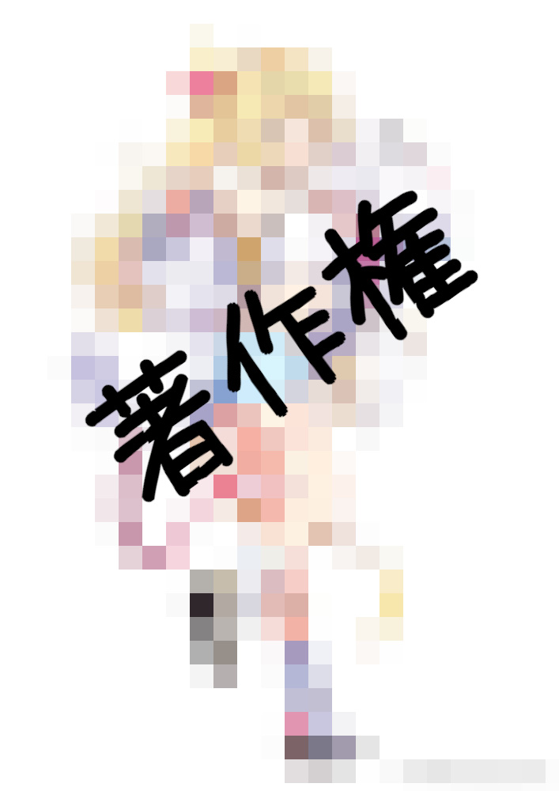
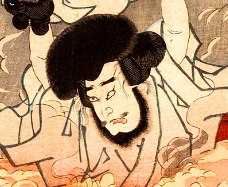
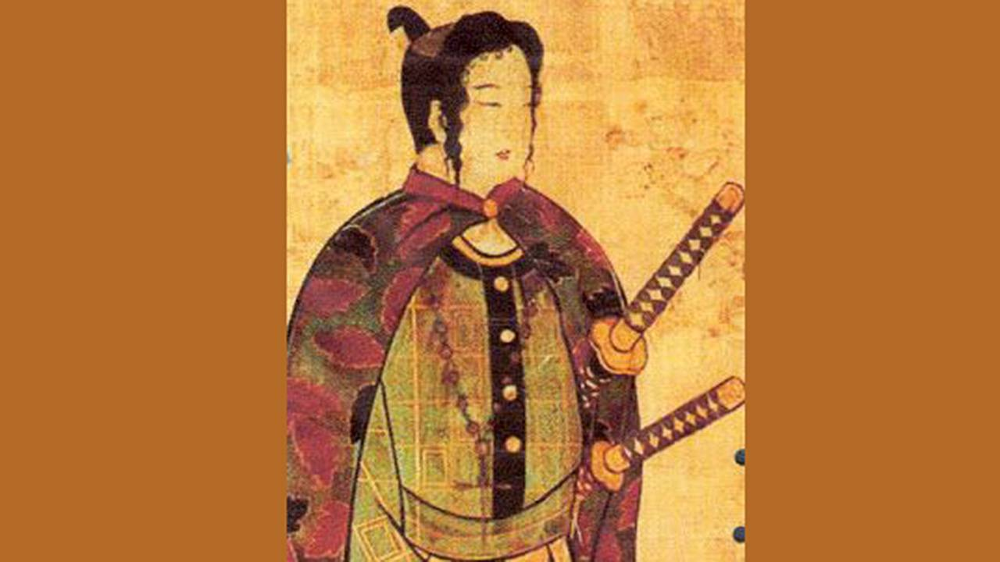

TOP
Cthulhu
Videos
Notion
#ゆる僕ら卓
このページでは、運営者がこれまで友達とプレイした卓 (ゆる僕ら卓) で登場したPCを紹介しています。
Characters

星川さら@Yakizakana
生粋のギャンブラー。一時期配信者を目指すも、配信中の喫煙により炎上。 以後引きこもりとなったがひょんなことから入店した新宿マルハンにて才能を開花、 現在ではパチプロの傍らパチンコ雑誌の特集を執筆して生計を立てている。(これ大丈夫？)
ジャスティン・パレス@トゥモ
調教師あがりの馬券師、4歳。なお画像は完全に馬のほうである。 「元調教師でデータ分析ができる」との力説があったが、〈コンピュータ〉の技能値は２。最も高い技能は〈鍵開け〉である（なぜ）。

石川権左衛門@sasaku
世界をまたにかける大泥棒。五右衛門ではない。 職業柄、動体視力、洞察能力に長けており、また拳銃の扱いには慣れている。しかし〈拳銃〉の技能値は初期値である。
湊かなえ@Yakizakana
幼少期から結婚詐欺師の母のもとで育てられ、人をだますことについては天下一品。 多くのタイプの男性に取り入るため様々なスキルを習得しており、応急手当やオカルト、生物学はその一環である。小説も書いていて、『告白』が代表作。
工藤新一@トゥモ
九州大学医学部中退。 大学時代にバイト代わりに闇バイトに手を染めて一度つかまり、実刑判決を受けるが、今は晴れて自由の身で配信者を目指す。
古代・アレキサンドライト・進@sasaku
アメリカ人の父と日本人の母を持つハーフ。英語圏の旅行程度であれば問題なく会話できる。 趣味はジムでの筋トレ。ダンベルの最高記録は４０kg。

天草四郎時貞@Yakizakana
泥棒を生業とする28歳。身長は208㎝と高め。ちょんまげ姿の盗人の最大の武器は、その強力な肉体である（SIZ17）。
かなえ@トゥモ
作家の30歳。運には恵まれず全体的に能力値は低い。なぜか上裸で参戦した。
真田士郎@sasaku
元軍人で現在ニートの33歳。元軍人にしては筋力は平均的だが、〈応急手当〉の技能値には自信がある（90）。